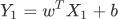
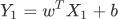
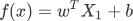
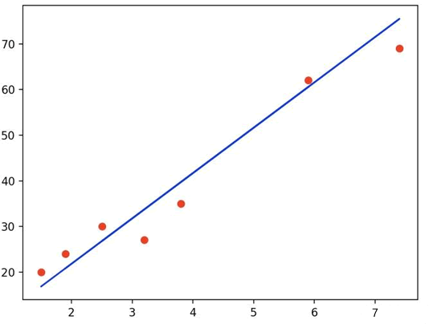
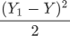
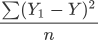
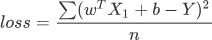

线性回归：损失函数和假设函数
通过前面内容的介绍，我相信你对线性回归算法已经有了初步的认识。那我们应该如何在一大堆数据中求解出“线性方程呢”比如前面提及的房价预测问题？这种问题才是符合实际应用的。数据样本会散落在“线性方程”的周围（下图 2 所示）， 而我们要做就是让线性方程的“直线”尽可能“拟合”周围的数据点。本节我们将从数学角度解析线性回归模型。

乍一看你可能蒙圈了，记住不用紧张。其实它和 Y=wX + b 是类似的，只不过我们这个标量公式换成了向量的形式。如果你已经学习了 《NumPy 教程》，那么这个公司很好理解，

图1：矩阵乘法运算
矩阵 A 的每一行分别与矩阵 B 的每一列相乘，比如 1*5+2*5+3*7 =36 、1*2+2*6+3*6=32、1*6+2*7+3*4=32，即可得出结果的第一行数据。
损失函数就像一个衡量尺，这个函数的返回值越大就表示预测结果与真实值偏差越大。其实计算单个样本的误差值非常简单，只需用预测值减去真实值即可：
公式是求“距离”因此要使用平方来消除负数，分母 2 代表样本的数量，这样就求得单样本误差值。当我们知道了单样本误差，那么总样本误差就非常好计算了：
最后，将假设函数带入上述损失函数就会得到一个关于 w 与 b 的损失函数（loss），如下所示：
在上述函数中 n、Y、X1 都是已知的，因此只需找到一组 w 与 b 使得上述函数取得最小值即可，这就转变成了数学上二次函数求极值的问题，而这个求极值的过程也就我们所说的“优化方法”。关于如何求极值会在下一节做详细介绍。
假设函数
通过前面知识的学习，我们知道假设函数是用来预测结果的。前面讲述时为了让大家更容易理解“线性回归”，我们以“直线方程”进行了类比讲解，然而线性方程并不等同于“直线方程”，线性方程描绘的是多维空间内的一条“直线”，并且每一个样本都会以向量数组的形式输入到函数中，因此假设函数也会发生一些许变化，函数表达式如下所示：
乍一看你可能蒙圈了，记住不用紧张。其实它和 Y=wX + b 是类似的，只不过我们这个标量公式换成了向量的形式。如果你已经学习了 《NumPy 教程》，那么这个公司很好理解，
Y1仍然代表预测结果， X1表示数据样本， b表示用来调整预测结果的“偏差度量值”，而wT 表示权值系数的转置。矩阵相乘法是一个求两个向量点积的过程，也就是按位相乘，然后求和，如下所示：图1：矩阵乘法运算
矩阵 A 的每一行分别与矩阵 B 的每一列相乘，比如 1*5+2*5+3*7 =36 、1*2+2*6+3*6=32、1*6+2*7+3*4=32，即可得出结果的第一行数据。
转置操作的目的是为了保证第一个矩阵的列数（column）和第二个矩阵的行数（row）相同，只有这样才能做矩阵乘法运算。
您也可以将假设函数写成关于 x 的函述表达式，如下所示：

损失函数
我们知道，在线性回归模型中数据样本散落在线性方程的周围，如下图所示：

图2：线性回归模型
图2：线性回归模型
损失函数就像一个衡量尺，这个函数的返回值越大就表示预测结果与真实值偏差越大。其实计算单个样本的误差值非常简单，只需用预测值减去真实值即可：
单样本误差值 = Y1 - Y但是上述方法只适用于二维平面的直线方程。在线性方程中，要更加复杂、严谨一些，因此我们采用数学中的“均方误差”公式来计算单样本误差：

公式是求“距离”因此要使用平方来消除负数，分母 2 代表样本的数量，这样就求得单样本误差值。当我们知道了单样本误差，那么总样本误差就非常好计算了：


在机器学习中使用损失函数的目的，是为了使用“优化方法”来求得最小的损失值，这样才能使预测值最逼近真实值。在上述函数中 n、Y、X1 都是已知的，因此只需找到一组 w 与 b 使得上述函数取得最小值即可，这就转变成了数学上二次函数求极值的问题，而这个求极值的过程也就我们所说的“优化方法”。关于如何求极值会在下一节做详细介绍。
关注公众号「站长严长生」，在手机上阅读所有教程，随时随地都能学习。内含一款搜索神器，免费下载全网书籍和视频。

微信扫码关注公众号